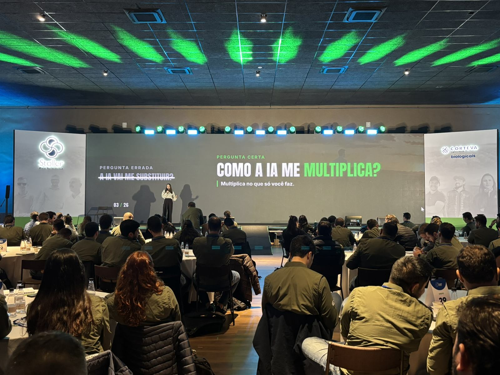
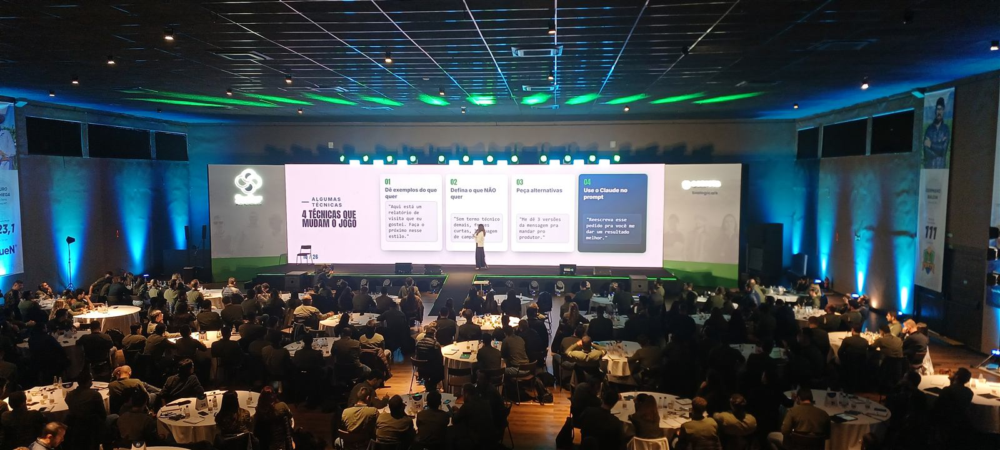
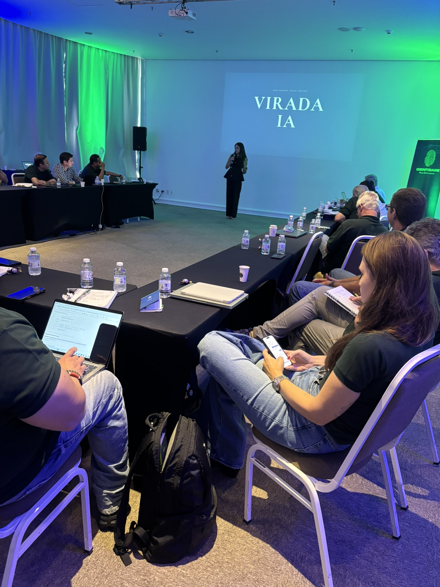

O que faz um treinamento de IA para empresas funcionar de verdade é ser sobre o trabalho real do time, não sobre IA em teoria. A diferença entre um treino que muda a segunda-feira e uma palestra que todo mundo esquece na sexta está na preparação: eu estudo a operação da empresa antes, entendo os processos que tomam tempo do time e trago exemplos com o vocabulário e os problemas daquela empresa. Genérico inspira por um dia. Específico muda a rotina.

Deixa eu ser honesta sobre o mercado de treinamento de IA, porque tem muita coisa ruim rolando. A maior parte do que se vende como "treinamento de IA para empresas" é uma palestra bonita, cheia de estatística assustadora e três prompts que a pessoa viu num vídeo do YouTube. Todo mundo sai animado. E na segunda-feira ninguém usa nada, porque nada daquilo tinha a ver com o trabalho de verdade daquela gente.
O diferencial não é o palco. É o que vem antes.
Quando a Stoller me chamou pra convenção, a primeira coisa que eu fiz não foi montar slide. Foi estudar a operação. Quem são essas pessoas? Um time de agro — gente de campo, comercial, técnico. O que consome o dia delas? Relatório de visita, comunicação com produtor, análise de dados de lavoura. Que palavras elas usam? Que dor elas têm que a IA resolve de verdade?
Só depois disso é que eu montei o conteúdo. E aí, no palco, os exemplos não eram genéricos: eram sobre o trabalho delas. Quando você mostra pra um técnico de campo como transformar um relatório de visita de 40 minutos em 5, com o vocabulário que ele usa, a IA para de ser assunto distante e vira ferramenta.

Por que estudar a operação antes muda tudo
Parece detalhe, mas é o jogo inteiro. Quando o treinamento é feito sob medida, três coisas acontecem que nenhuma palestra pronta consegue:
- A pessoa se reconhece no exemplo. "Isso aí é o meu trabalho." No segundo em que ela pensa isso, ela para de assistir e começa a aprender.
- A dúvida vira aplicação na hora. Como o exemplo é real, a pessoa já sai com um caso de uso pronto pra testar — não com uma ideia vaga de "um dia eu uso".
- A liderança vê retorno. Quando o time aplica no processo real, o resultado aparece em tempo economizado — e não em "gostei da palestra".
O tema central que eu levei pra Stoller resume minha visão inteira sobre IA no trabalho: a pergunta errada é "a IA vai me substituir?". A pergunta certa é "como a IA me multiplica no que só eu faço?". Um bom treinamento não ensina a delegar seu valor pra máquina — ensina a usar a máquina pra render mais no que te torna insubstituível.
Um treinamento de IA feito sob a sua operação
Eu estudo o trabalho real do seu time antes, e o treinamento sai com os exemplos, o vocabulário e os processos da sua empresa. Convenção grande, turma por área ou hackathon — a gente escolhe o formato certo pro seu momento.
O que muda depois de um treinamento sob medida
A diferença mais bonita aparece nas semanas seguintes, não no aplauso do dia. Depois de um treinamento feito em cima da operação, o time começa a trazer os próprios usos — coisas que eu nem imaginei no palco, porque quem conhece o processo de dentro é ele. A IA deixa de ser projeto da diretoria e vira hábito distribuído pela empresa. É esse o objetivo: não impressionar 280 pessoas por uma hora, e sim mudar como elas trabalham daqui pra frente.

Se você quer entender a fundo o que a IA — e o Claude em específico — consegue fazer no trabalho antes de levar pro seu time, o Guia do Claude é a base de tudo que eu ensino nesses treinamentos. E se você quer ver os formatos de treinamento por dentro (palestra, turma por área, hackathon), tá tudo em Treinamentos Corporativos.